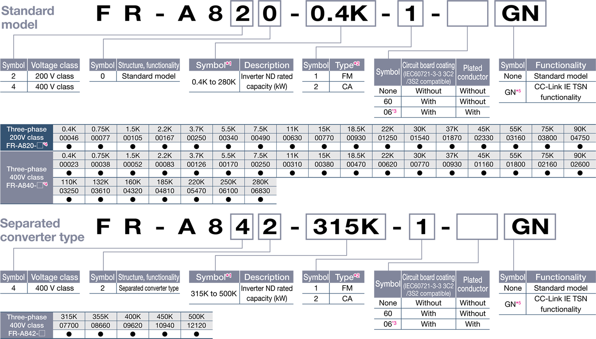
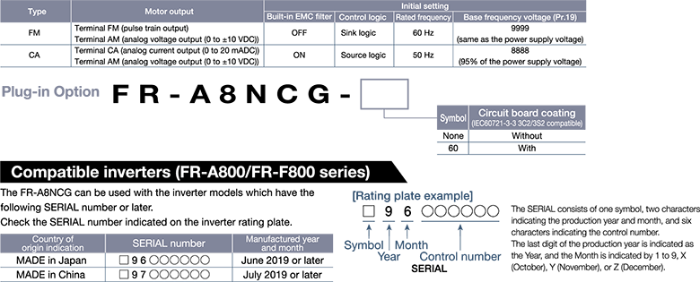

Inverters-FREQROL Produk yang direkomendasikan

Rangkaian produk
Inverter FR-A800-GN dan Opsi Plug-in FR-A8NCG untuk Fungsi Komunikasi CC-Link IE TSN

*1：Model dapat ditunjukkan secara alternatif dengan arus terukur inverter (peringkat SLD).
*2：Spesifikasi berbeda menurut jenisnya sebagai berikut.
*3：Tersedia untuk 5,5K atau lebih tinggi.
*4：Untuk menggunakan inverter 75K atau lebih tinggi dan motor 75 kW atau lebih tinggi, selalu pasang reaktor DC (FR-HEL), yang tersedia sebagai opsi.
*5： Kedalaman yang diperlukan untuk pemasangan akan 2,1 mm lebih besar dari model standar.
